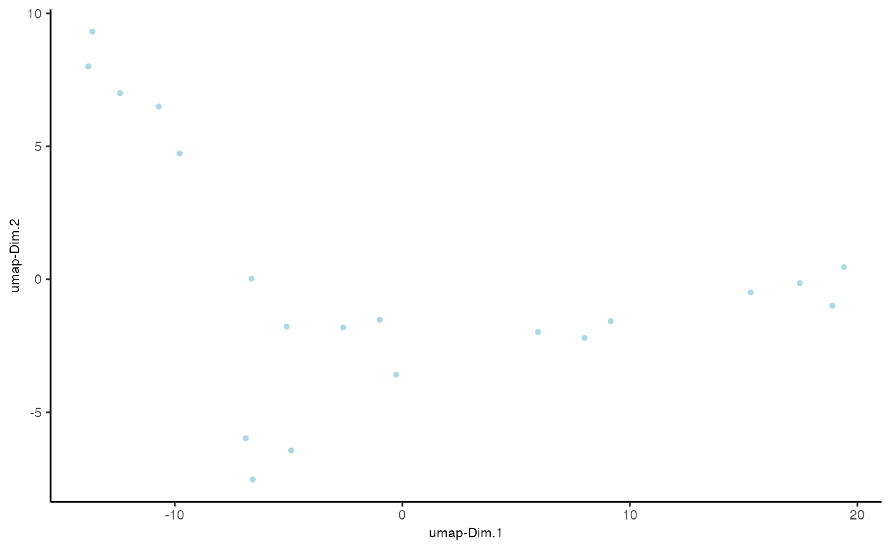
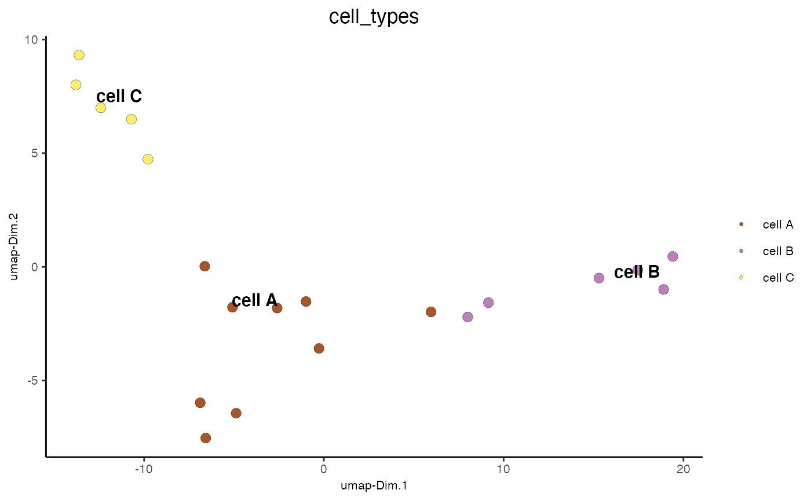
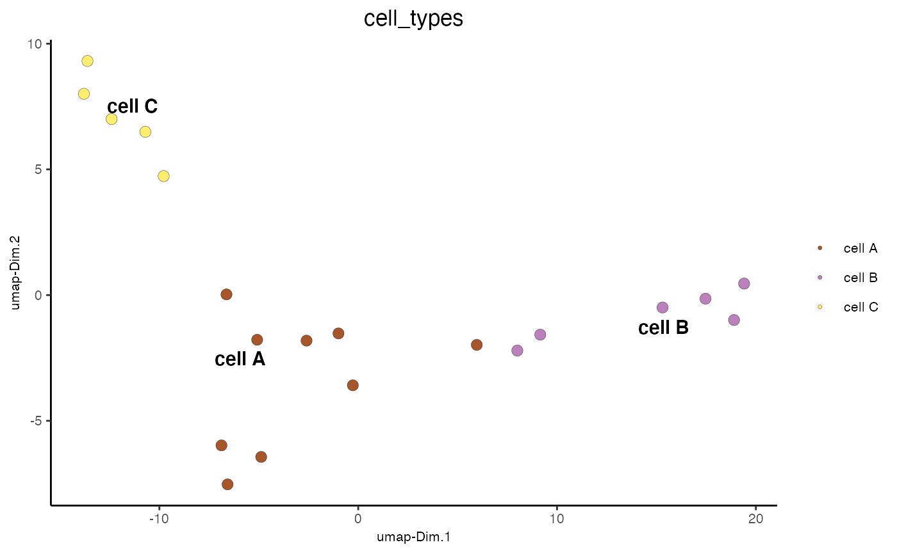

Visualize cells according to dimension reduction coordinates
dimPlot(...)
Arguments
| ... |
Arguments passed on to dimPlot2D
gobjectgiotto object group_bycreate multiple plots based on cell annotation column group_by_subsetsubset the group_by factor column dim_reduction_to_usedimension reduction to use dim_reduction_namedimension reduction name dim1_to_usedimension to use on x-axis dim2_to_usedimension to use on y-axis spat_enr_namesnames of spatial enrichment results to include show_NN_networkshow underlying NN network nn_network_to_usetype of NN network to use (kNN vs sNN) network_namename of NN network to use, if show_NN_network = TRUE cell_colorcolor for cells (see details) color_as_factorconvert color column to factor cell_color_codenamed vector with colors cell_color_gradientvector with 3 colors for numeric data gradient_midpointmidpoint for color gradient gradient_limitsvector with lower and upper limits select_cell_groupsselect subset of cells/clusters based on cell_color parameter select_cellsselect subset of cells based on cell IDs show_other_cellsdisplay not selected cells other_cell_colorcolor of not selected cells other_point_sizesize of not selected cells show_cluster_centerplot center of selected clusters show_center_labelplot label of selected clusters center_point_sizesize of center points center_point_border_colborder color of center points center_point_border_strokeborder stroke size of center points label_sizesize of labels label_fontfacefont of labels edge_alphacolumn to use for alpha of the edges point_shapepoint with border or not (border or no_border) point_sizesize of point (cell) point_alphatransparancy of point point_border_colcolor of border around points point_border_strokestroke size of border around points titletitle for plot, defaults to cell_color parameter show_legendshow legend legend_textsize of legend text legend_symbol_sizesize of legend symbols background_colorcolor of plot background axis_textsize of axis text axis_titlesize of axis title cow_n_colcowplot param: how many columns cow_rel_hcowplot param: relative height cow_rel_wcowplot param: relative width cow_aligncowplot param: how to align show_plotshow plot return_plotreturn ggplot object save_plotdirectly save the plot [boolean] save_paramlist of saving parameters, see showSaveParameters default_save_namedefault save name for saving, don't change, change save_name in save_param |
Value
ggplot
Details
Description of parameters, see dimPlot2D. For 3D plots see dimPlot3D
See also
Other reduced dimension visualizations:
dimPlot2D(),
dimPlot3D(),
plotPCA_2D(),
plotPCA_3D(),
plotPCA(),
plotTSNE_2D(),
plotTSNE_3D(),
plotTSNE(),
plotUMAP_2D(),
plotUMAP_3D(),
plotUMAP()
Examples

dimPlot(mini_giotto_single_cell, cell_color = 'cell_types', point_size = 3)

